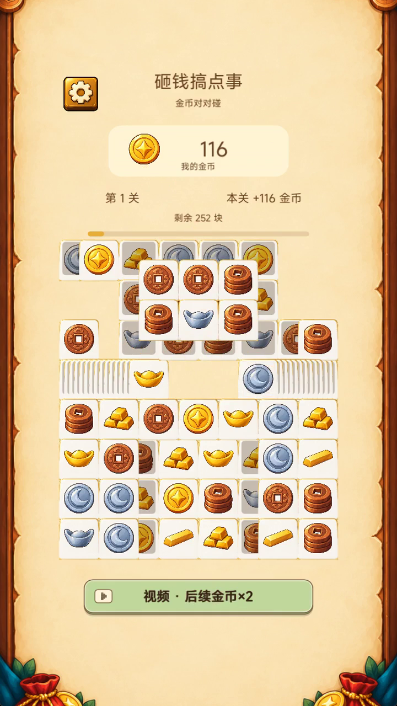
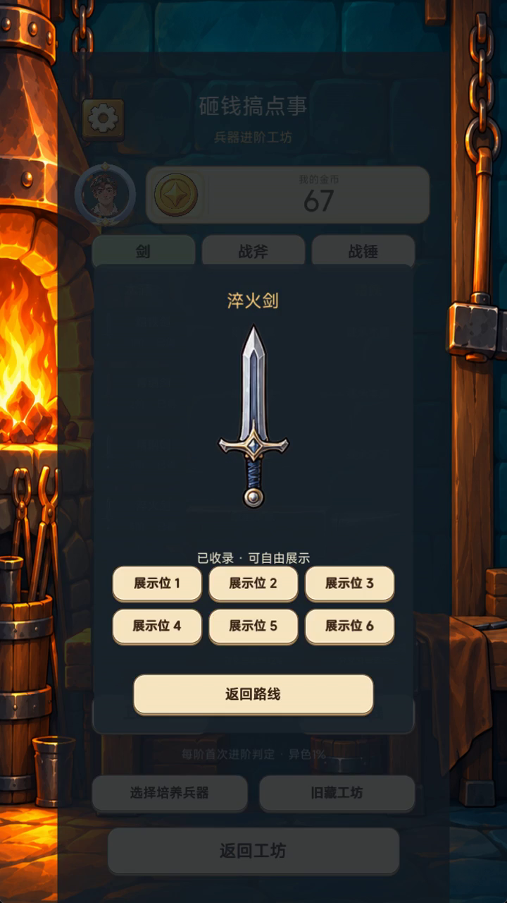

短局收入连接长期养成
关内完成配对即可看到金币反馈，关外把收入转化为兵器成长。以两个节奏不同的循环衔接，让重复挑战有明确去向。
TAPTAP MAKER / 个人 AI 游戏实践
配对消除 / 概率锻造 / 收集养成
配对消除铜钱、银子和金砖，再把收入带回百器工坊。购入剑、斧或锤，沿独立进阶路线锻造、变异并安排收藏展示。

TapTap 公开测试 · 2026.10.25 核对
GAMEPLAY / 核心体验
点击或拖动相同钱币进行配对，获得不同收益。金币用于工坊购入和培养兵器，三类武器各有20阶，并提供变异、异色、头像框与六个展示位。体力控制入局节奏；游戏内金币不可兑换现金。
TAPTAP GALLERY / 游戏展示图
以下来自 2026.10.25 核对的 TapTap 公开游戏页展示图；保留原图，部分含商店宣传文案，不冒充本次重新运行游戏的实机录制。
点击任意截图可查看原图。 多张画面可左右滑动，也可聚焦图库后使用方向键浏览。


DESIGN / 规则与取舍
关内完成配对即可看到金币反馈，关外把收入转化为兵器成长。以两个节奏不同的循环衔接，让重复挑战有明确去向。
本地新工坊将剑、斧、锤分别扩展为 20 阶，培养库可容纳 24 件兵器。玩家不只追逐一个图鉴序号，还能保留并选择不同兵器。
锻造中的成功、失败回收和保底共同影响资源安排；变异与异色形态提供额外收集目标。当前公开介绍以剑、斧、锤三类各20阶的培养路线呈现。
六个展示位供玩家自由安排兵器，配合八个免费头像与 27 个成就框形成个性化展示。界面迭代同时关注长名称、奖励说明和手机安全区。
MY PRACTICE / 项目推进
通过 AI 协作推进消除与工坊养成的规则衔接，迭代兵器独立培养、收藏展示、头像和成就表现。以真实试玩反馈检查点击和拖拽、收益反馈及奖励说明，并持续整理商店素材和版本介绍，使宣传内容能对应实际构建。
TAPTAP / 游戏入口
试玩入口与当前可玩版本以 TapTap 游戏页为准；公开介绍中的功能和数量属于开发者在平台展示的信息。